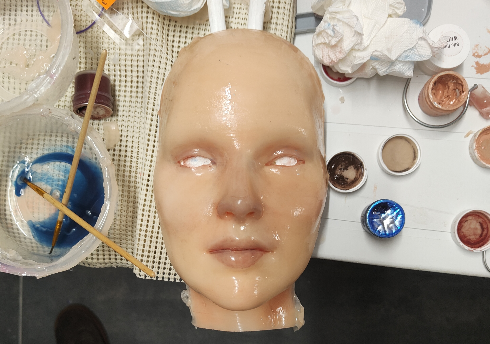
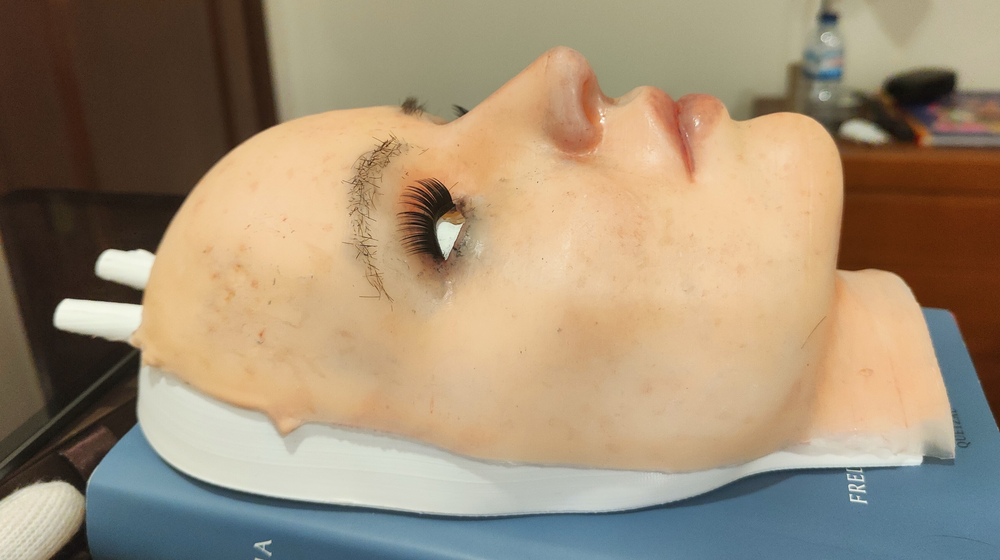
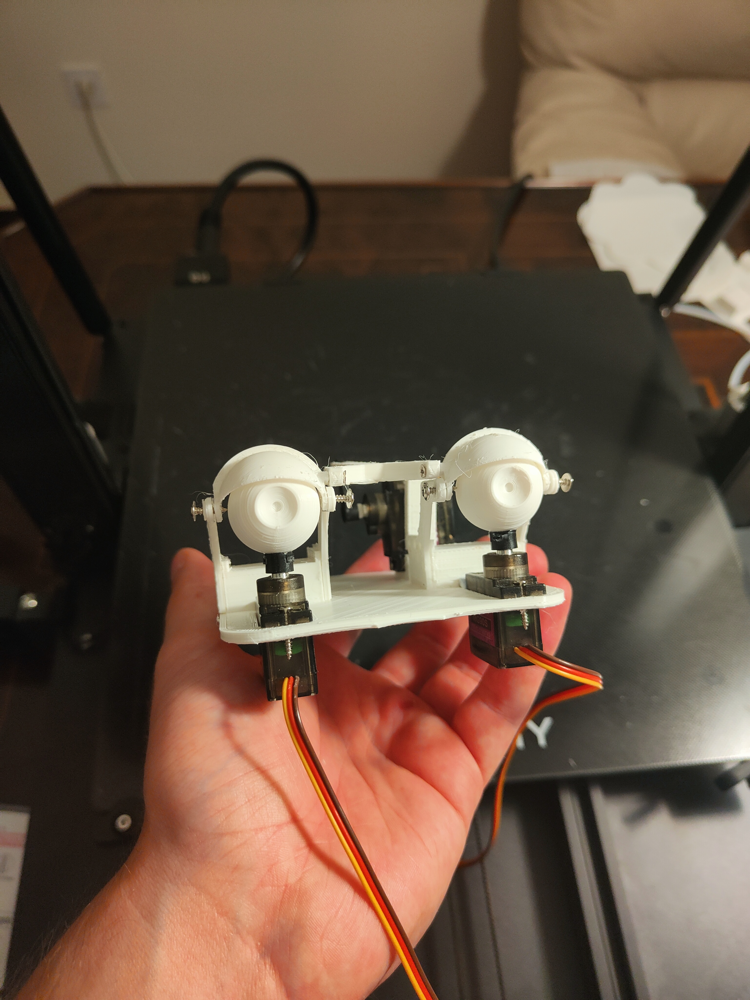
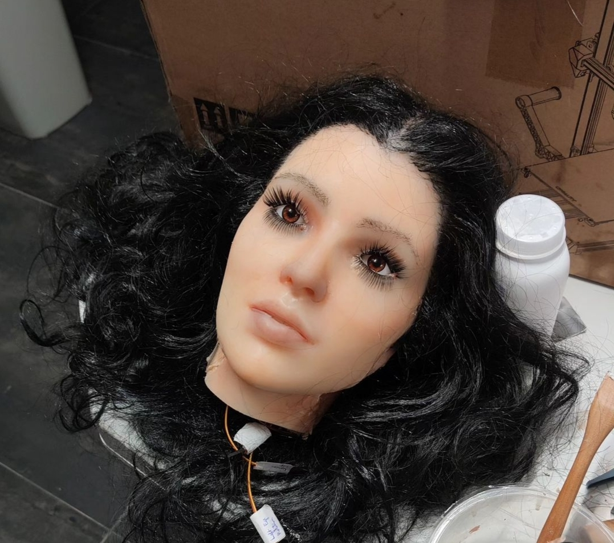
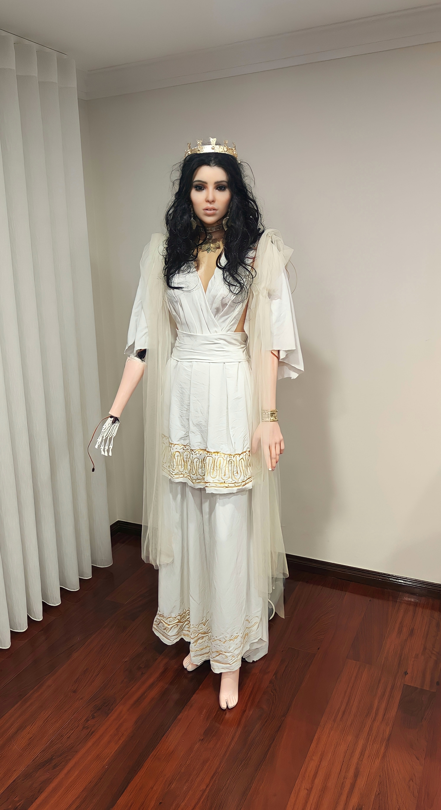
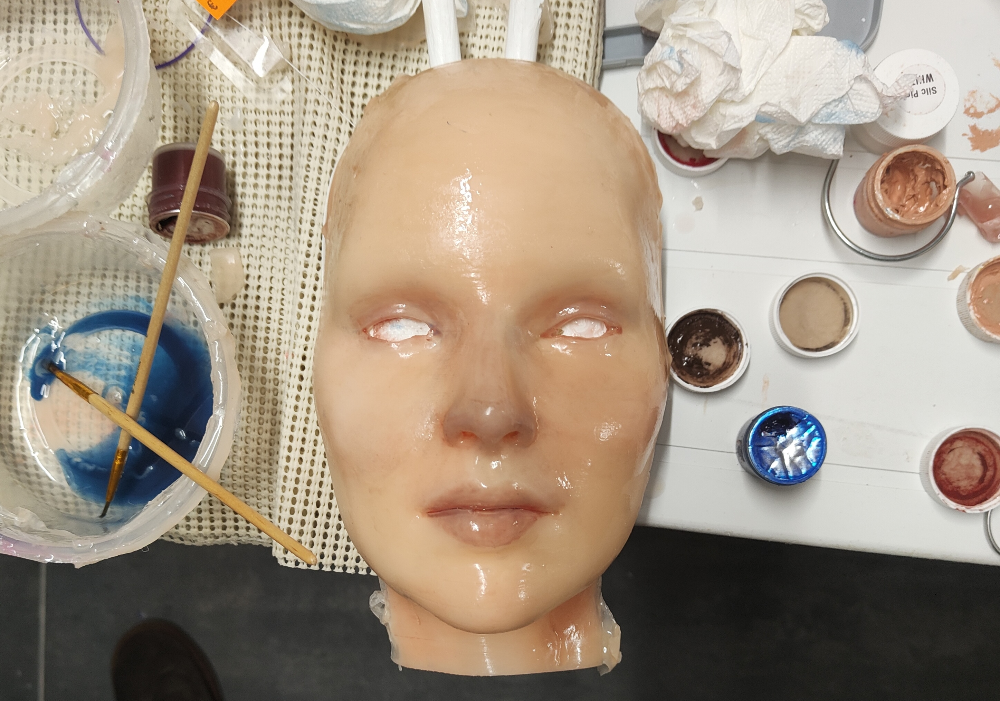
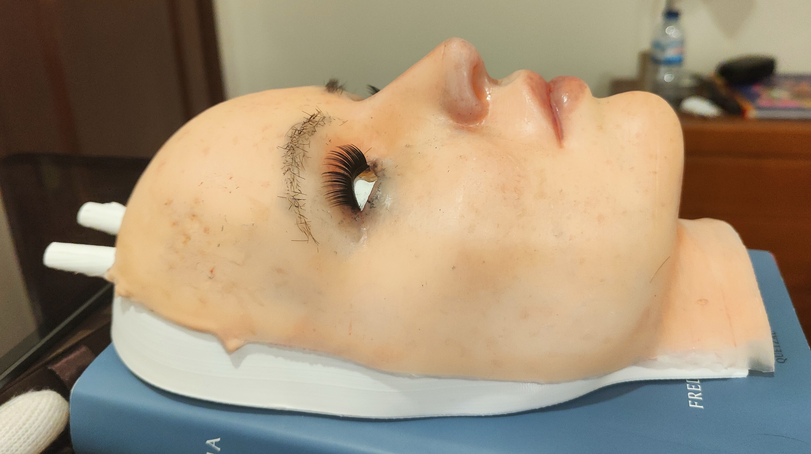
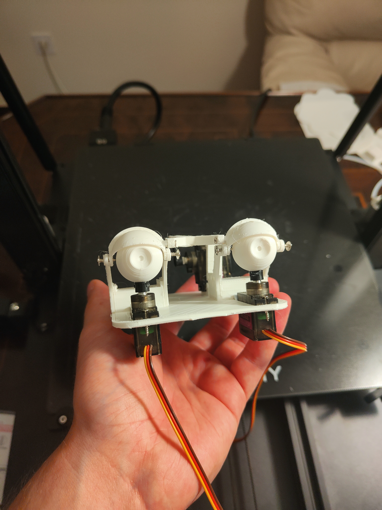
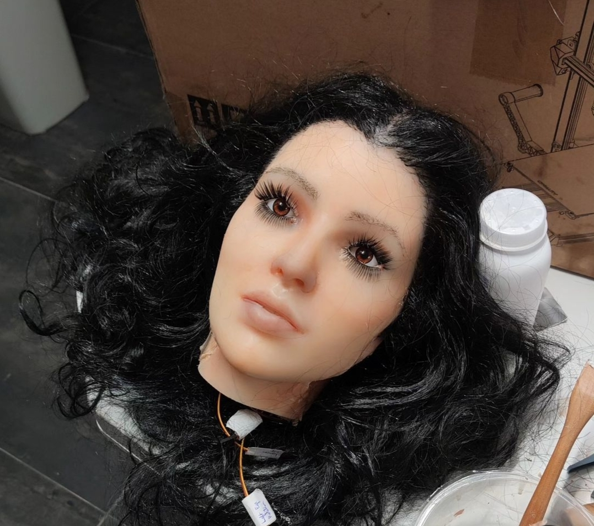
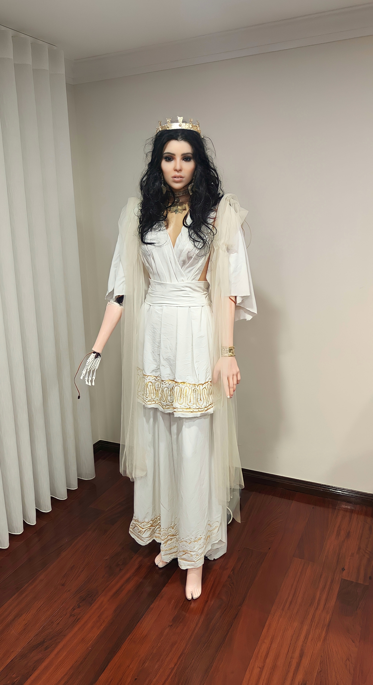

Project Gallery
Ariadne
Drawing inspiration from the rich tapestry of Greek mythology, we proudly present "Ariadne" — a masterful embodiment of the legendary princess from the tale of the Labyrinth of the Minotaur. Ariadne is not merely a robot; she represents a harmonious fusion of innovative craftsmanship and age-old legends. Every component of Ariadne epitomizes cutting-edge innovation. Entirely sculpted using advanced 3D printing, from the intricate mechanisms to its sleek mold, showcases the future of design. Its face, capturing the serene beauty of its namesake, is crafted with theme park-grade silicone, Ecoflex from Smooth-On, offering a touch of lifelike realism. The painstakingly punched eyebrows and hair lend her a touch of authenticity, making her visage all the more striking. Her in-house designed dress, rich with Grecian motifs, complements her state-of-the-art build. And while her appearance is breathtaking, Ariadne's capabilities are equally impressive. Being fully electrical, she is a testament to the marvels of modern robotics intertwined with artistic finesse. Experience Ariadne — where mythology, technology, and artistry converge.


 









Telemachus: New Project
Telemachus: The Pneumatic Marvel Introducing "Telemachus", our latest foray into the world of animatronics. Unlike its predecessors, Telemachus heralds a new age of pneumatic animatronics, offering a fresh perspective on motion dynamics and realism. Constructed with a robust metal frame, Telemachus is built to last. We've sourced the finest industrial-grade parts to ensure its durability, allowing it to withstand the test of time and deliver consistent, lifelike movements. But its strength doesn't compromise its beauty. Telemachus is adorned with a meticulously crafted, theme park-grade silicone skin, lending it an unparalleled realism that's sure to captivate any observer. The painstakingly punched hair adds another layer of authenticity, showcasing our commitment to detail and the pursuit of perfection. Discover Telemachus, where engineering prowess meets artistry, redefining the boundaries of what animatronics can achieve.